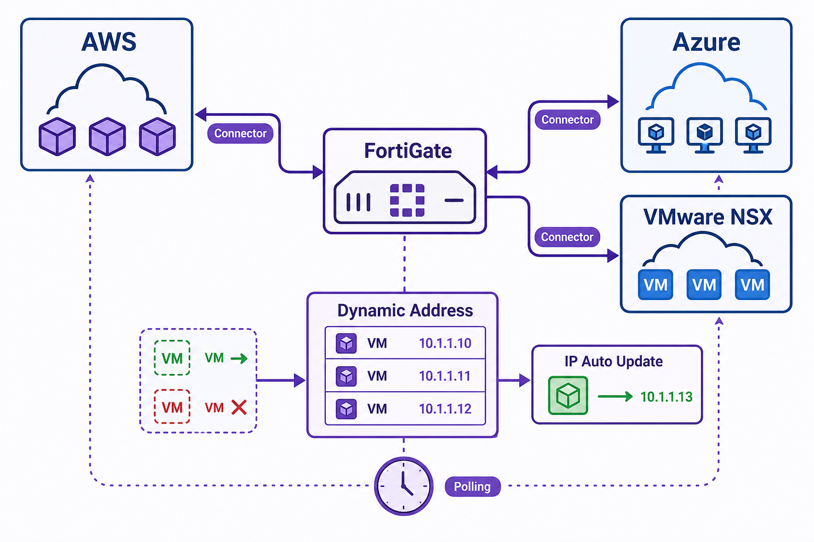

Overview
Fabric Connectors are integration points that allow FortiGate to pull live data from external systems — cloud platforms, SDN controllers, and threat intelligence feeds — and use that data to dynamically build firewall policy objects. The most common application is dynamic address objects: instead of a static IP address object that an administrator manually maintains, a dynamic address object is keyed to a filter — a tag value, an instance attribute, a security group name — and FortiGate continuously polls the connected platform to resolve which current IP addresses match that filter. When infrastructure changes, the address object updates automatically.
The two major categories of Fabric Connectors are cloud connectors (AWS, Azure, Google Cloud, Oracle Cloud) and SDN connectors (VMware NSX, OpenStack, Nuage). Cloud connectors authenticate to the cloud provider's API using credentials or IAM roles and query resource metadata. An AWS connector, for example, can filter by tag key/value pairs, VPC ID, or instance state. An Azure connector can filter by resource group or tag. The connector polls on a configurable interval and rebuilds the address object's IP list whenever the result changes. Policies referencing these dynamic objects enforce the current state of the infrastructure automatically, with no manual intervention required.
Understanding what happens when a connector loses API access — and how long polling intervals affect responsiveness — is important for operational reliability. A long polling interval means a newly provisioned server might not be reachable through the firewall for several minutes after launch. An unreachable API endpoint raises questions about how existing sessions are handled. These edge cases are part of what the NSE7 exam tests: not just the happy path of connector configuration, but what happens at the boundaries and failure modes.

Fabric Connectors architecture diagram
Target Questions
These are the questions your Socratic session will explore. Read them before you start — they tell you what understanding to look for while reviewing the study guide.
- 1What is a Fabric Connector and what does it integrate with — give the general categories?
- 2What is an SDN connector — name two supported SDN platforms?
- 3How does a cloud connector dynamically create address objects — what data source does it poll?
- 4What is the polling interval for Fabric Connectors and what are the implications of a long interval?
- 5What happens to policies using a dynamic address object when the connector cannot reach the cloud API?
- 6What is a "filter" in the context of an SDN connector address object?
- 7What types of cloud resource metadata can be used as filters for dynamic address objects?